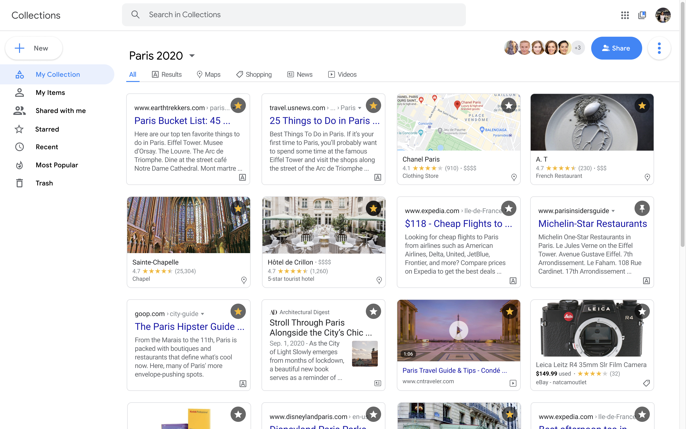

Accessing and saving information can be difficult when there is just so much content on the internet. Google Collections is a tool that allows users to easily save search results and collaborate on sets of information.
WHO
I completed all parts of this project on my own as part of a fellowship called Design Collective. Special shoutout to David Lie-Tjauw, Brian Lin, Moses Ting, and Jessica Ko for all their mentorship and help.
WHEN
June 26 to September 14, 2020.
Google is the most popular search engine. It is efficient and holds a plethora of information. Sometimes, users may want to access this information again at a later time, especially if they are doing research for things like trips, presentations, or hobbies.
Currently, Google has Collections available on its mobile and desktop platforms, but on desktop, it can mainly be accessed via an obscure icon in the app kit or by typing in "www.google.com/collections." Though Collections is a useful feature, it is currently not very accessible or collaborative on desktop, which still makes up 40% of Google's search traffic.
Moreover, there is no function to save every kind of search. Images, map results, jobs, and shopping items can be saved, but not news, videos, or text results. No bookmarks seem to be available on the main page. The actual Collections page itself does not use spacing well and could be improved. Lastly, Google does not allow users to edit collections, only view others' links.
I sought out to fix these issues.


Google has optimized its page to garner as many clicks as possible, and adding Collections would just save clicks for later. This also adds another product into Google's own ecosystem of apps.
Additionally, Google will feel more social and collaborative, bringing the best features of Google Drive to its search engine's results.
Users will be able to easily bookmark any kind of information for later access. This will allow users to declutter tabs and utilize another convenient Google feature.
They will be able to work on projects with others and properly research for certain experiences and events in their lives.

I spoke with 9 people regarding Google Collections and my ideas for it.
Users can hover any content to access the blue bookmark, saving an item to a Collection whenever and wherever.
They can also access Collections via an icon on the upper right or a banner than notifies them of their recent save.

When navigating to Collections, users will see their entire portfolio. They can click on a single Collection to see its contents, organize and sift through the contents by filtering and interacting with each item, and navigate to other Collections via a drop-down menu.

Users can copy and paste links for mass editing and viewing.
They can also directly invite contacts via Gmail to edit and contribute on their own.
Users can interact with items in Collections, too. They can hover over to "Star" an item and revisit it later under "Starred", view "Recents," see what others have added under "Shared with me," and even check out which items are the most "Starred" under "Popular."
Next, I would like to explore what this feature would look like on mobile. (I decided to work on the desktop version because it was a less visible and still drove 40% of search traffic.)
I loved my experience with Design Collective. The mentors were sweet and gave me lots of insight, which was incredibly useful as I am a (mostly) self-taught designer. Learning how to use Principle was also fun and intuitive! I have learned a lot more about making my designs more interactive and engaging and hope to apply this in my career soon.